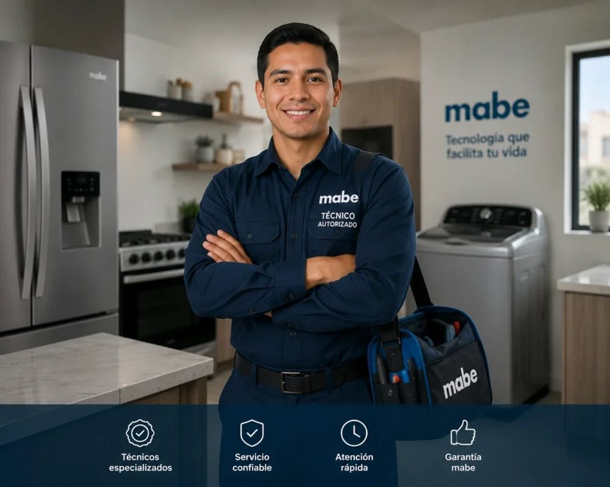

Instalación profesional con conexión de agua, nivelación y verificación de funcionamiento.

Llame directamente o escriba por WhatsApp al mismo número para agendar su servicio técnico Mabe Instalación de Electrodomésticos en Panamá. Respondemos en minutos.
☏ Escribir por WhatsAppInstalamos la línea de agua y drenaje con válvulas y sellos correctos.
Un equipo mal nivelado sufre fallas prematuras y vibraciones excesivas.
Confirmamos que la instalación eléctrica sea segura para el equipo.
No entregamos el equipo instalado sin confirmar que funcione correctamente.
Sí, todas nuestras reparaciones incluyen garantía escrita sobre la mano de obra y los repuestos instalados.
El diagnóstico es gratuito cuando usted decide realizar la reparación con nosotros. Si solo requiere el diagnóstico sin reparación, consulte el costo por WhatsApp.
Cuéntanos el electrodoméstico. Te confirmamos por WhatsApp en minutos.
☏ Escríbenos por WhatsApp